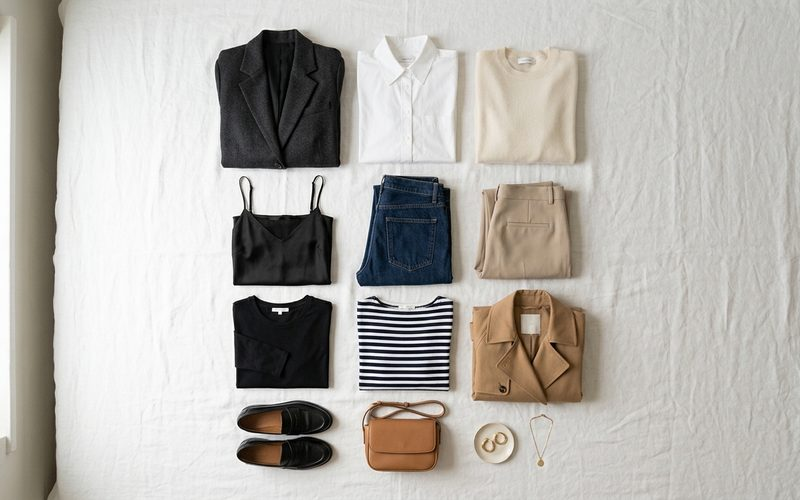

O guarda-roupa cápsula é um dos conceitos mais libertadores da moda contemporânea: um conjunto enxuto de peças versáteis, criteriosamente escolhidas, que se combinam entre si com naturalidade. Quando esse conceito encontra o universo do brechó, o resultado é ainda mais rico — porque cada peça carrega uma história, uma qualidade de construção e uma singularidade que as coleções em massa raramente oferecem.
A ideia central é simples: em vez de ter um armário transbordante de roupas que você nunca usa, você passa a ter entre 30 e 40 peças que cobrem todas as ocasiões da sua rotina. Para a mulher do Savassi — que alterna entre reuniões, almoços no bairro, eventos culturais e fins de semana ativos — essa filosofia funciona como uma bússola de estilo.
Antes de garimpar qualquer peça, faça um inventário do que já existe no seu armário. Separe o que você realmente usa, o que tem potencial e o que pode ser consignado (uma excelente forma de financiar as novas aquisições). A partir daí, identifique as lacunas: você tem blusas demais, mas nenhuma calça de corte clássico? Vestidos para sair, mas nada para o trabalho? Essas lacunas guiam o garimpo com intenção.
As peças-base de uma cápsula clássica incluem: uma calça de alfaiataria de corte reto, uma calça jeans de corte atemporal, dois ou três bodies ou blusas neutras, um blazer estruturado, um vestido versátil (midi ou de manga longa), um trench coat ou sobretudo, e sapatos em três categorias — casual, trabalho e festa. Em brechós como o Outra Vez, essas peças aparecem com frequência em excelente estado, muitas vezes de marcas que não estão mais no mercado com a mesma qualidade.
A diferença entre um guarda-roupa cápsula bem-sucedido e uma coleção aleatória de peças está na coesão. Ao garimpar, tenha em mente a paleta de cores que já existe no seu armário. Se você já tem muitas peças em tons terrosos, um blazer vinho ou um vestido azul-marinho pode ser a adição perfeita sem criar ruído visual. Garimpar com uma foto do seu armário no celular é uma prática que muitas clientes do Outra Vez já adotaram com ótimos resultados.
Outro critério fundamental é o caimento. Uma peça de brechó pode ser uma joia, mas se o caimento não for perfeito para o seu corpo, ela ficará encostada. Não tenha medo de investir em ajustes com costureira — o custo de um ajuste pontual num tecido de qualidade ainda é muito menor do que comprar uma peça nova equivalente. E o resultado? Uma roupa que parece ter sido feita para você.
A magia da cápsula está na matemática das combinações. Com 10 peças bem escolhidas, você pode criar dezenas de looks diferentes. Um blazer de alfaiataria garimpado no Outra Vez pode aparecer num dia com calça de linho e mocassim, no outro com vestido slip e sandália de salto, e ainda no terceiro com jeans e tênis branco. É a mesma peça, três personalidades distintas.
Montar um guarda-roupa cápsula com peças de brechó é, acima de tudo, um ato de autoconhecimento. Você aprende sobre o que realmente ama vestir, sobre o que o seu corpo pede, sobre os tecidos que te fazem sentir bem. E cada peça descoberta no garimpo carrega algo que uma peça de prateleira raramente tem: a sensação de ter sido encontrada, não apenas comprada.